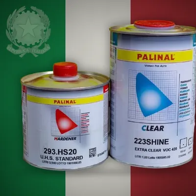

2K лак і автоемаль PALINAL: загальні правила роботи
2K-матеріали твердіють хімічно — після змішування із затверджувачем. Тому з ними працюють строго за технічним описом (ТДС) конкретного продукту. Нижче — загальні правила і приклади з ТДС PALINAL (палінал).
1. Пропорція — тільки з ТДС
У кожного 2K-матеріалу своя пропорція змішування, і вона є в ТДС. Приклади PALINAL:
| Лак 923 AS 90 | 2 : 1 за об’ємом + 10 % розчинника — ТДС |
|---|---|
| Лак 223 SHINE | 2 : 1 за об’ємом + 0–5 % розчинника (із затверджувачем 293.HS10 — до 10 %) — ТДС |
| Ґрунт 873 Acryl Filler 5:1 | 5 : 1 + розчинник 0 / 10 / 20 % залежно від режиму — ТДС |
| Епоксидний ґрунт 881.7777 | 3 : 1 + 15–20 % розчинника 077 — ТДС |
Змішуйте мірною лінійкою або чашкою з поділками, ретельно перемішуйте. Готові 2K-автоемалі PALINAL Multicryl 900 у нашому каталозі йдуть комплектом 1 л фарби + 0,5 л затверджувача — пропорцію й розчинник для конкретного кольору уточнюйте в ТДС або в Telegram.
2. Затверджувач і розчинник — під температуру
Швидкий, стандартний чи повільний затверджувач і розчинник обирають за температурою в камері. У ТДС лаку 223 SHINE, наприклад: розчинник 075.0015 — до 15 °C, 075.0020 — стандарт, 075.0030 — 25–35 °C, 075.0040 — понад 35 °C. Для 923 AS 90 є затверджувачі 993.FAST, 993.MS-- і 993.SL0W.
3. Життєздатність: готуйте стільки, скільки встигнете нанести
Після змішування в суміші «тікає» час. За ТДС: лак 923 AS 90 — 4 год при 20 °C, 223 SHINE — 1,5 год, ґрунт 873 5:1 — 30 / 60 / 90 хв залежно від режиму. Не розбавляйте загуслу суміш, щоб «дотягнути», — готуйте нову порцію. Банку із затверджувачем щільно закривайте одразу після використання.
4. Шари і витримка
Кількість шарів і паузу між ними беріть з ТДС: 923 AS 90 — ½ + 1 шар, 10 хв між шарами і перед сушінням; 223 SHINE — ½ + 1 шар, 5 хв; ґрунт 873 5:1 — 2–3 шари з витримкою 5–10 хв. Дюзу й тиск для цих матеріалів — див. у статті як вибрати дюзу.
5. Сушіння і полірування
Терміни сушіння залежать від затверджувача і температури. Для 923 AS 90 за ТДС: при 20 °C — 12 / 16 / 24 год, при 60 °C — 20 / 30 / 40 хв (FAST / MS / SLOW). Для 223 SHINE полірування — через 18–24 год при 20 °C або після 40 хв при 60 °C. Повну хімічну стійкість обидва лаки, за ТДС, набирають через 7 днів при 20 °C.
6. Умови і підготовка
Дотримуйтеся температурних обмежень з ТДС: наприклад, для епоксидного 881.7777 виробник прямо пише — не працювати нижче 10 °C і при вологості понад 80 %. Поверхню знежирюйте антисиліконом (наприклад, PALINAL 950). 2K-матеріали з затверджувачами вимагають захисту органів дихання, рукавичок і вентиляції.
Після роботи одразу мийте пістолет — як це зробити правильно, читайте в статті догляд і чистка фарбопульта.
Товари з каталогу до теми
 Palinal 923 AS 90 — лаквід 1 711 грн
Palinal 923 AS 90 — лаквід 1 711 грн
Palinal 223 SHINE — лаквід 2 600 грн Palinal 873 Acryl Filler 5:1 — акриловий ґрунт-наповнювач1 004 грн
Palinal 873 Acryl Filler 5:1 — акриловий ґрунт-наповнювач1 004 грн Palinal 881.7777 — епоксидний ґрунт1 149 грн
Palinal 881.7777 — епоксидний ґрунт1 149 грн Palinal 075.0020 — стандартний розчинниквід 598 грн
Palinal 075.0020 — стандартний розчинниквід 598 грн Palinal 2K автоемаль RAL/VW 9010 GLOSSY1 706 грн
Palinal 2K автоемаль RAL/VW 9010 GLOSSY1 706 грн Palinal 950 — антисилікон (сольвент)374 грн
Palinal 950 — антисилікон (сольвент)374 грн
Джерела даних
- ТДС PALINAL 923.AS90 — 2K лак anti-scratch (PDF)
- ТДС PALINAL 223 SHINE — 2K UHS лак (PDF)
- ТДС PALINAL 873 Acryl Filler 5:1 (PDF)
- ТДС PALINAL 881.7777 — епоксидний ґрунт (PDF)
Цифри в статті — з технічних описів (ТДС) і даних виробників, зазначених вище. Перед роботою звіряйтеся з ТДС конкретного матеріалу.